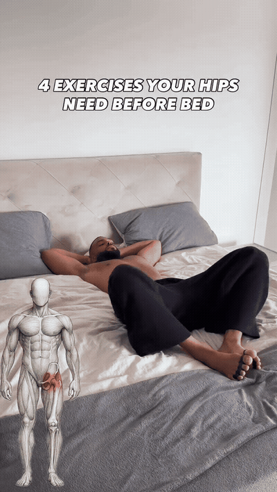
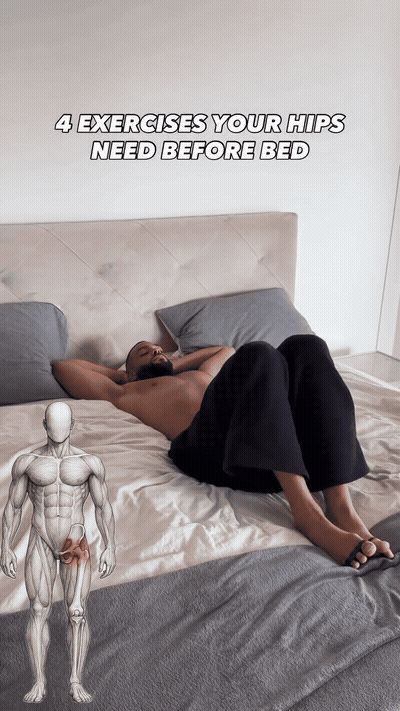
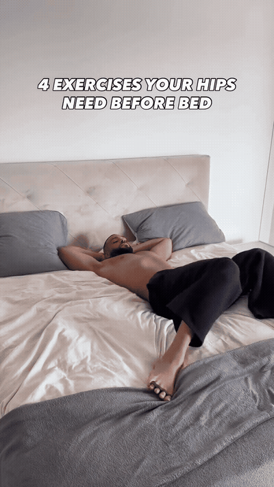
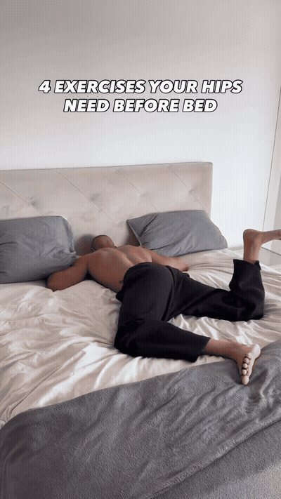

Lie on the back with the knees bent and dropping outward in the reclined butterfly position shown. Keep the range gentle and supported.

From the supine setup, allow the legs to rotate inward and outward in the controlled windshield-wiper-style movement shown.

Lie on the back with the knees bent and explore the controlled hip-rotation pattern shown without forcing the low back.

From the prone position, open one bent knee to the side while the other leg stays longer, creating the supported hip/groin position shown.